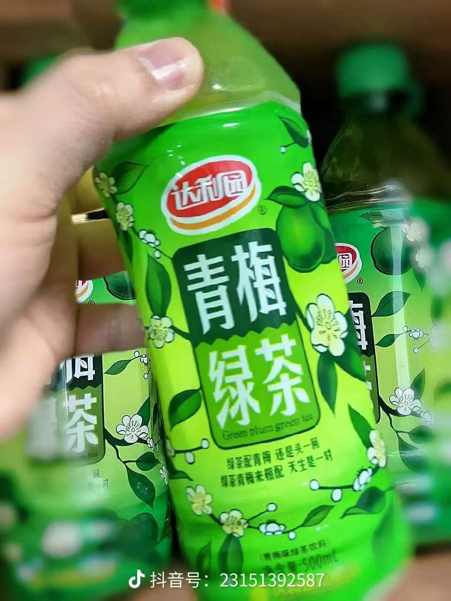
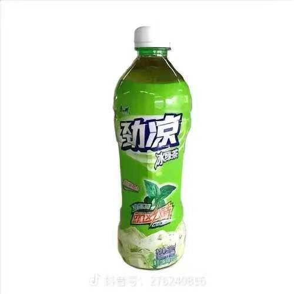
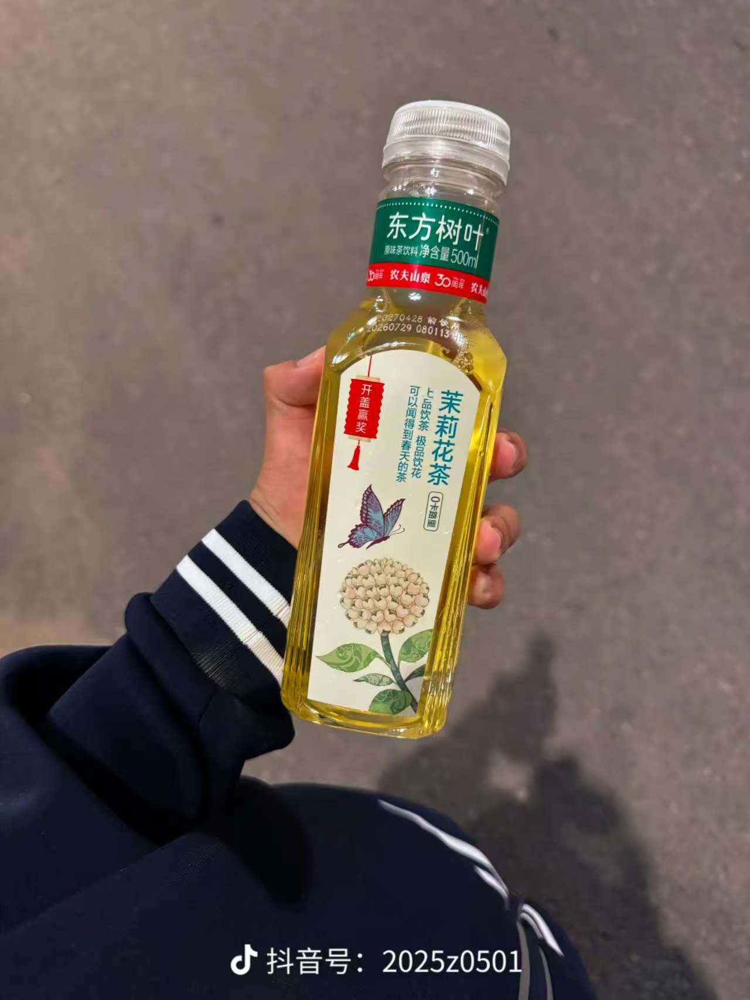
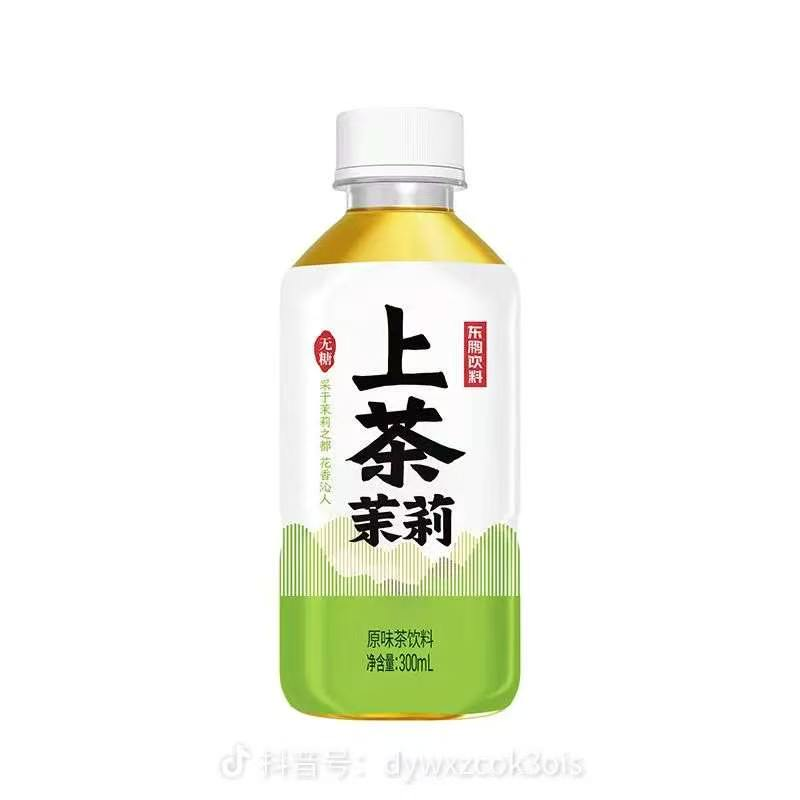
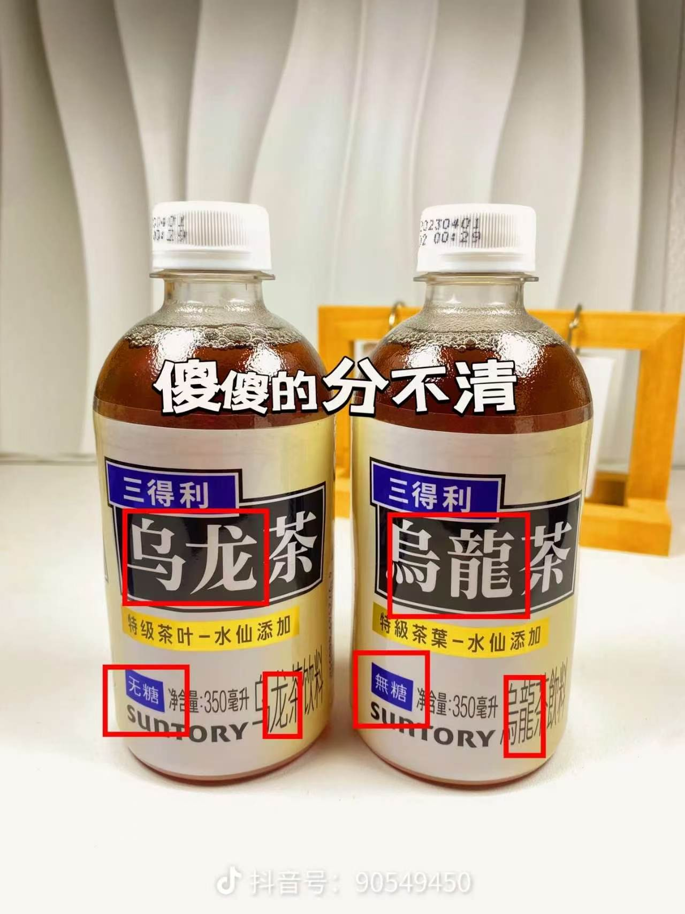
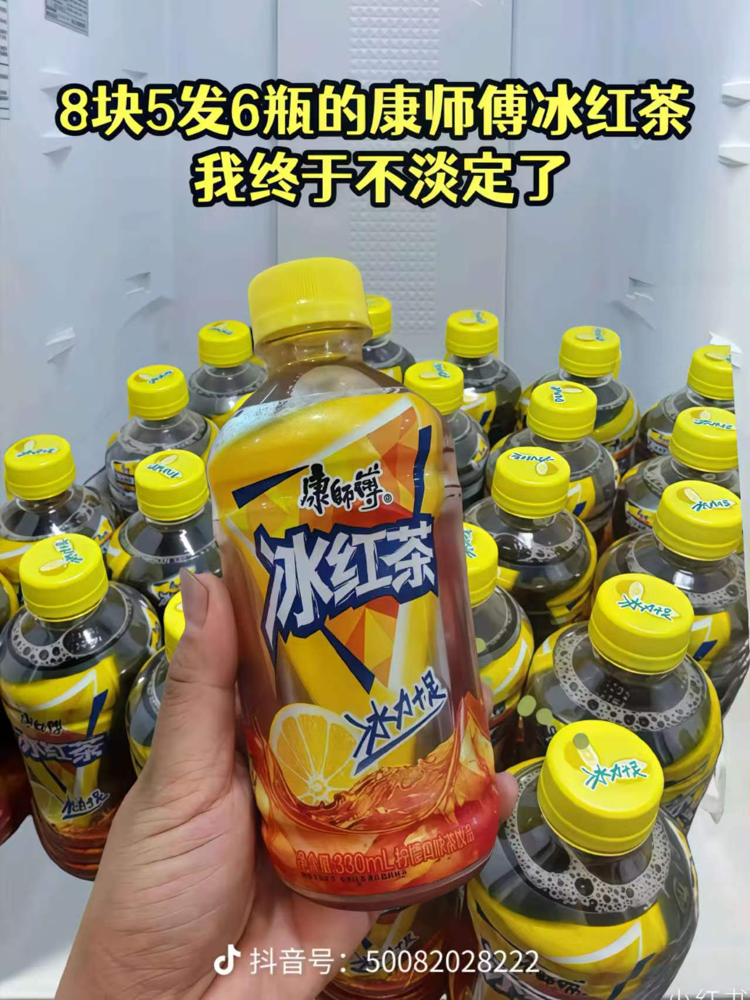
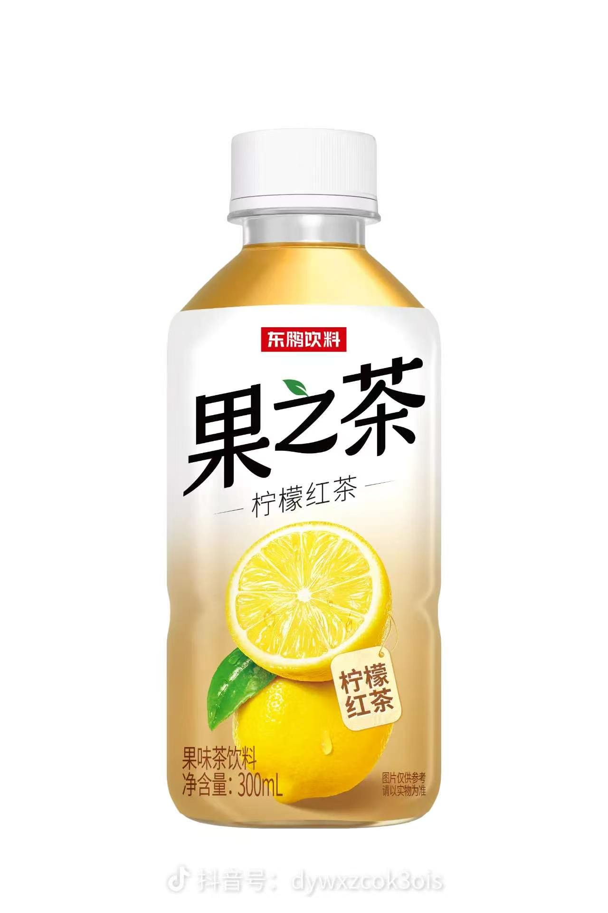
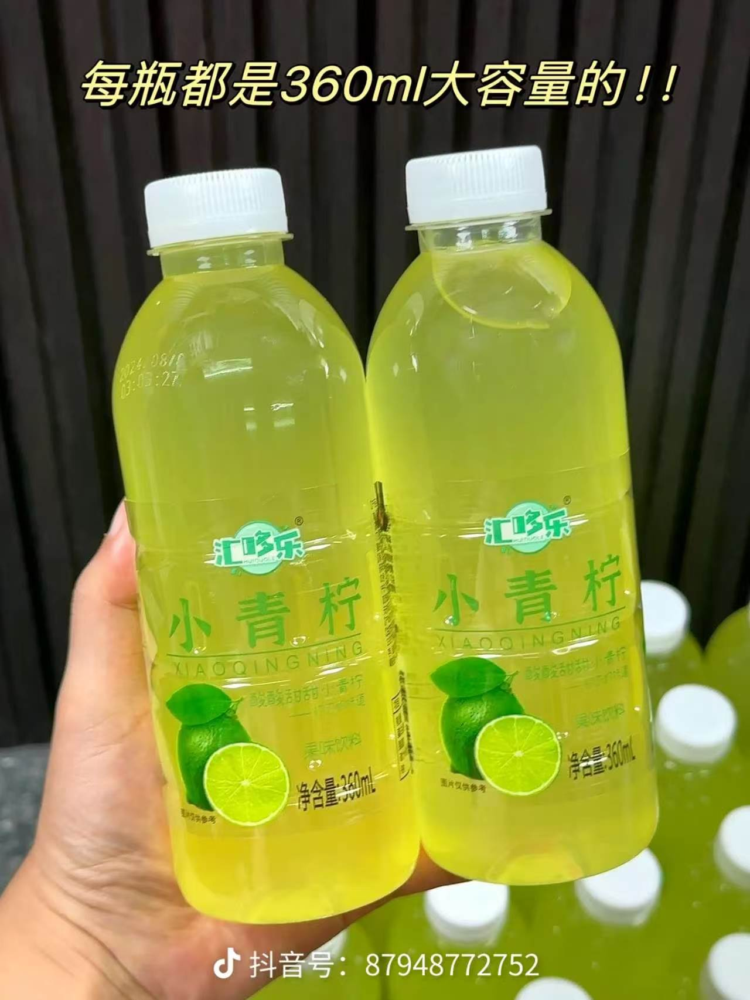
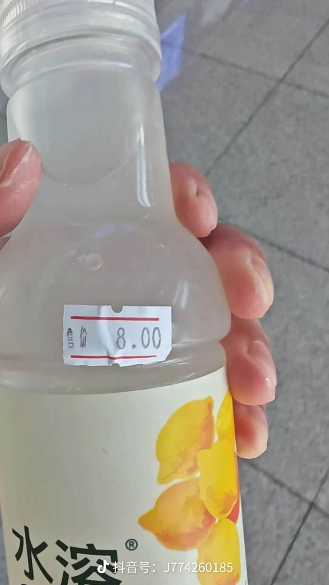
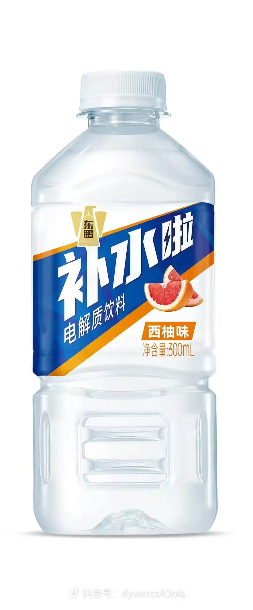

饮料大全
展厅介绍
这是一个关于瓶装饮料的小小展厅。我平时就爱逛便利店的冷柜，看到没喝过的口味总要买一瓶试试，
时间久了也攒下一份自己的口味清单——这里收录的，是其中我喝过、也愿意推荐给别人的 10 款。
选这个主题，是因为它离生活足够近：不需要任何门槛，走进任何一家便利店都能遇见，
而它们之间的差别，其实都藏在拧开瓶盖的那一口里。展厅按茶饮、果味饮料和电解质水分成三部分，
每件展品都配了图片和一段介绍，点击标题可以跳到对应的购买渠道。

青梅绿茶，是一杯把春天的酸甜封存进茶汤里的饮品。精选清明前后的鲜嫩绿茶为底，茶香清透、回甘绵长；再调入颗颗青梅熬制的果露，酸意明亮却不刺口，甜味收敛而有分寸。
- 入口先是青梅的果酸在舌尖轻轻一挑，随即被绿茶的清冽包裹，最后留下一缕淡淡的甘甜在喉间回荡。
- 冰镇后饮用最为畅快，酸甜清爽，解腻消暑，是佐餐、午后或闷热天气里都恰到好处的一杯。

冰绿茶只用当季原叶，高温快冲逼出茶香，随即滤去茶叶、急速降温，把那一口鲜爽原封不动地留在杯里。
- 好的冰绿茶汤色清亮带一点嫩黄，入口微涩而后迅速化开，回甘从舌根慢慢漫上来，久放也不发苦。
- 不加糖时清香最完整，喜欢甜一点可以要半糖；配上火锅、炸物或油腻的重口味，最能解腻清口。

东方树叶的茉莉花茶用绿茶做坯，与茉莉鲜花一层花一层茶地反复窨制，花香渗进茶叶里，却始终没有盖过茶味。
- 汤色清亮浅黄，入口先是茉莉的清甜，随后绿茶的微涩与回甘慢慢铺开，0 糖 0 卡，喝着清爽没有负担。
- 冰镇之后花香更明显，适合日常解渴，也适合配清淡的点心和简餐。

上茶茉莉选自茉莉之都的鲜花与茶坯窨制，无糖配方，把甜味全部让给花香。
- 茶汤透亮，茉莉香清扬，入口柔顺不涩，咽下后舌根留一点淡淡的甘，喝完嘴里很干净。
- 常温时花香最完整，冷藏后更利落，适合办公室久坐时来一瓶，解腻又不压味。

三得利乌龙茶以特级水仙茶叶萃取，无糖，把乌龙茶该有的香与苦都原样保留下来。
- 茶汤是清透的琥珀色，焙火香里透出一点兰花香，入口顺滑，回甘之后留一丝清苦，越喝越有味道。
- 冰过之后香气收敛、口感更干净，配油大的炒菜和烤肉最合适，也是减糖日子里最耐喝的一瓶。

康师傅冰红茶是很多人记忆里的味道：红茶打底，调入柠檬的酸香和刚好的甜，甜中带酸，一口下去格外解渴。
- 茶味不算重，胜在畅快直接，冰镇后那股“冰力十足”的爽利感，是夏天最省事的快乐。
- 配烧烤、炸鸡、麻辣烫这类重口味最合适，热天运动完来一瓶也很痛快。

果之茶把红茶的醇厚和柠檬的鲜酸放在同一瓶里，茶味在前，果香随后跟上，酸甜比例收得比较柔和。
- 300mL 的容量刚好一次喝完，甜度不冲，冰过之后柠檬香更清爽。
- 适合早餐配面包，也适合下午犯困时来一瓶提提神。

小青柠以青柠果汁调味，酸得清醒、甜得轻快，入口先是青柠的锐利酸香，随后甜味把酸度兜住，喝完口舌生津。
- 颜色是透亮的青绿，看着就凉快，360mL 的容量比常见小瓶更经喝。
- 冰镇或加冰块后酸香更突出，配油腻的饭菜和火锅最能解腻，夏天在冰箱里常备一瓶很实用。

水溶C100以柠檬汁为底，酸味干净直接，主打补充维生素C，甜度克制，尾段还带一点果皮的清苦。
- 入口酸得爽利而不刺，果香真实，冰镇之后柠檬味更跳。
- 适合熬夜、加班或蔬果吃得少的日常，随手一瓶补点维生素C，也适合配口味偏甜的下午茶解腻。

补水啦是电解质饮料，除了水，还补上出汗时流失的钠、钾等电解质，西柚味里带一点微咸，喝起来不腻。
- 口感清爽，西柚的微苦与果甜在舌尖一闪而过，冰镇后尤其顺口，比纯水更能留住口渴时的那口满足。
- 适合运动后、天热出汗多或长时间在户外时饮用，300mL 一次喝完刚好，不占肚子。
点开看看每个标签是做什么的
- <!DOCTYPE html> —— 告诉浏览器这是一份 HTML5 文档
- <html lang="zh-CN"> —— 整个页面的根元素，lang 说明主要语言是中文
- <head> / <body> —— 前者放给浏览器看的信息，后者放给访客看的内容
- <meta charset="UTF-8"> —— 声明编码，中文才不会乱码
- <title> —— 浏览器标签页上显示的文字
- <h1> / <h2> —— 两级标题，用来组织内容的层级
- <img> —— 图片，src 用相对路径指向同目录的文件，alt 是加载失败时的替代文字
- <p> —— 段落，用来成段地介绍内容
- <ul> / <li> —— 无序列表，整理并列的要点
- <a href> 搭配 id —— 目录跳转到页面内，外部链接跳转到购买渠道
- <details> / <summary> —— 可展开收起的内容块，就是你刚点开的这个